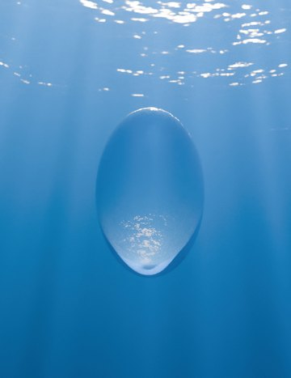
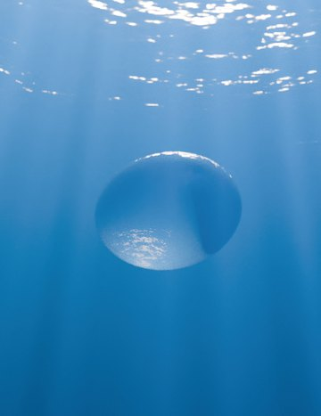
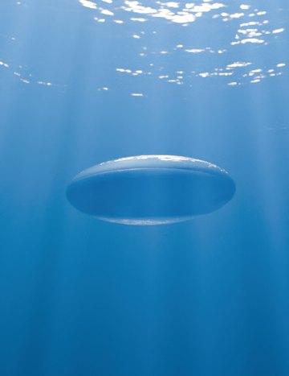
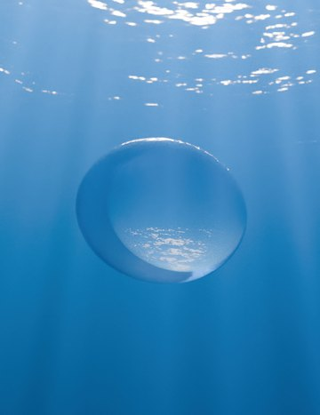
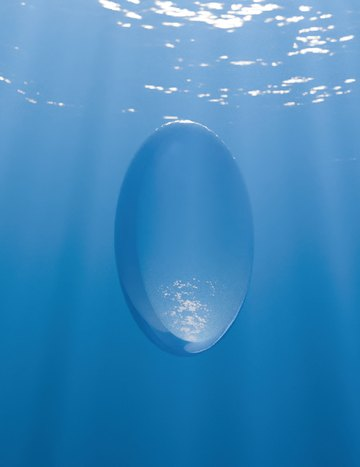
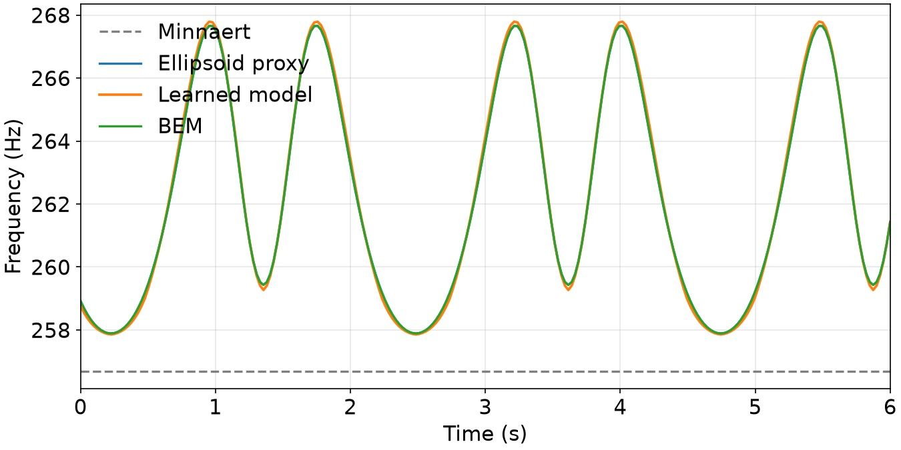
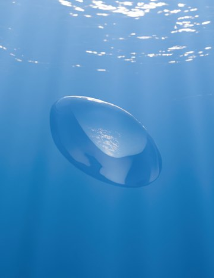
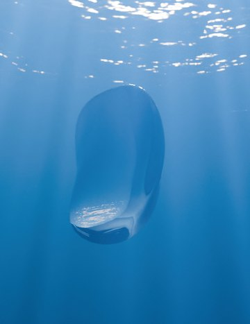
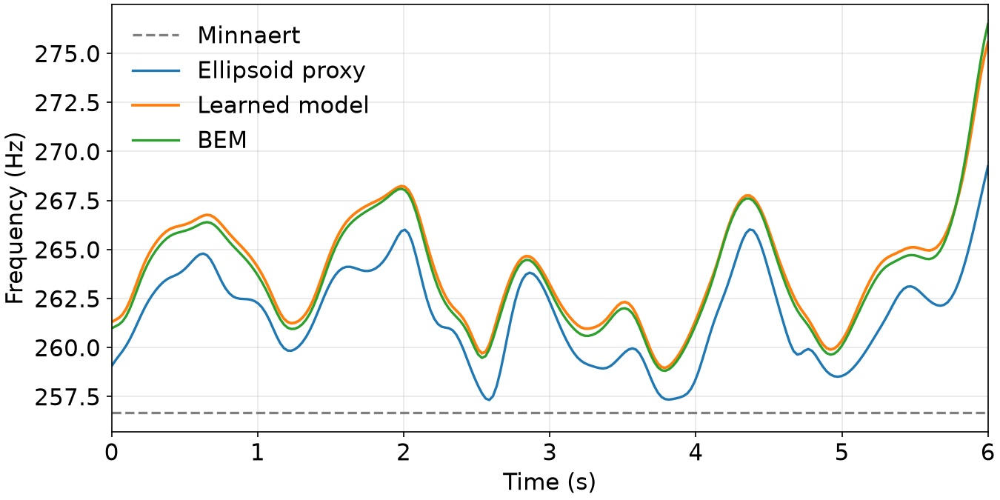
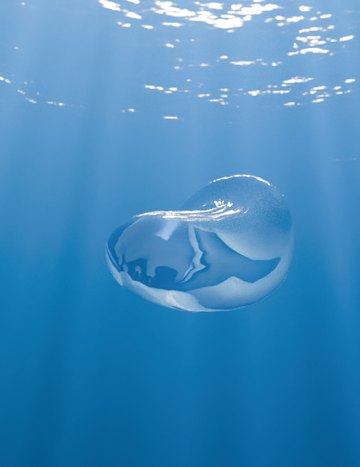
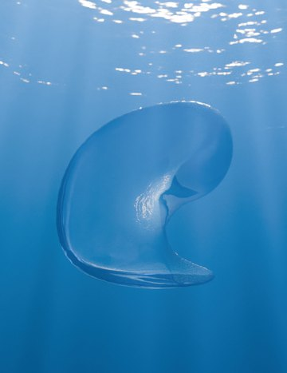
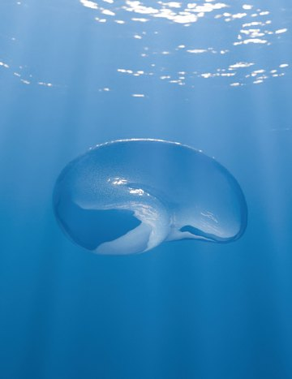
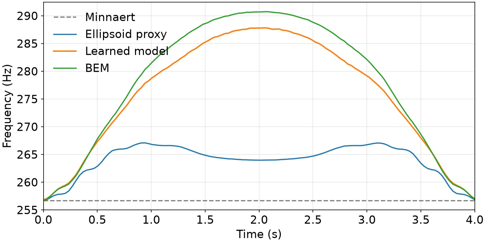
Bubble Theater: Demonstration of different shape-to-frequency models for individual underwater bubbles undergoing different deformations: (Top) ellipsoidal, (Middle) Curl noise, and (Bottom) the Enright test. The five images on the left show example shapes from each generation method. The plots on the right compare each model against the BEM ground truth. These musical pitch fluctuations reach up to two semitones (≈200 cents) under large deformations, well above the ≈20 cent perceptual threshold for transient sounds and clearly audible in the supplemental video. Our learned surrogate tracks them closely; the ellipsoidal proxy captures the near-ellipsoidal case but misses much of the rise for the curl-noise and Enright shapes; the constant-frequency spherical Minnaert model misses them entirely, mistuning by up to two semitones at the largest deformations. Even at large deformations, the learned model remains close to the BEM ground truth while requiring only a fraction of the computational cost.
To assess our learned model's generalization, we evaluate it on three procedurally generated bubbles that expose its strengths and limitations. The shapes are produced by an ellipsoid, a curl-noise deformation, and the velocity field from the Enright test, respectively. This “bubble theater” offers a controlled setting for comparing frequency models against the BEM ground truth. The higher BEM cost and residual error of the Enright test scene trace to the finer mesh resolution required by its thin, sheet-like geometry.
| File | What it holds |
|---|---|
ellipsoid_result/freq_curves.csv |
per frame: f_minnaert, f_strasberg, f_nn8, f_bem |
curl_noise_result/freq_curves.csv | the same, curl-noise sequence |
enright_test_result/freq_curves.csv | the same, Enright test |
frames/ | the fifteen frames above |
dataset/bubble_theater/ |
the scenes themselves: per-frame meshes and one trackedBubInfo per frequency model |